생산공급
생산현황
세계 각지의 천연가스 생산국으로부터 LNG수송선으로 도입되는 LNG는 생산기지에서 하역되어 저장 탱크에 보관되었다가 다시 기화되어 전국 배관망으로 송출됩니다.
(2013.9.30 기준)
| 구분 | 평택생산기지 | 인천생산기지 | 통영생산기지 | 계 | |
|---|---|---|---|---|---|
| 운전개시 | 1986.11 | 1996.10 | 2002.9 | - | |
| 부지면적 | 45.2만평 | 44.8만평 | 40만평 | - | |
| 저장탱크 |
|
|
|
60기 886만㎘ | |
| 송출설비 | 저압펌프 | 150T/hx59기 | 150T/Hx52기 | 150T/Hx41기 | 150 T/Hx152기 |
| 고압펌프 |
|
110T/Hx40기 | 110T/Hx22기 |
|
|
| 기회설비 | 저압ORV | 90T/Hx3기 | - | 180T/Hx9기 | 90T/Hx3기 |
| 고압ORV | 180T/Hx12기 | 180T/Hx9기 |
|
180 T/Hx30기 | |
| SMV |
|
|
|
|
|
| 재액화설비 |
|
30T/H x 4기 |
|
|
|
| BOG처리설비 | 12,000N㎥/Hx12기 | 12,000N㎥/Hx12기 | 12,000N㎥/Hx10기 | 12,000N㎥/Hx34기 | |
| 기화용해수펌프 |
|
|
|
|
|
| 부두설비 |
|
|
|
|
|
천연가스 생산기지 조감도 보기
- 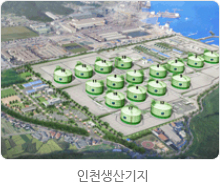
- 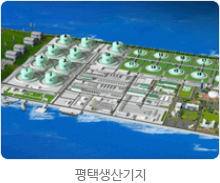
- 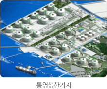
공급현황
세계 각지의 천연가스 생산국으로부터 LNG수송선으로 도입되는 LNG는 생산기지에서 하역되어 저장 탱크에 보관되었다가 다시 기화되어 전국 배관망으로 송출됩니다.
공급현황
- 각 생산기지로부터 기화된 천연가스를 공급받은 지역본부에서는 각 정압기지(4 ~ 0.85MPa)를 거쳐서 발전소와 일반 도시가스회사의 배관까지 천연가스를 안전하게 공급합니다.
- 이 과정에서 중앙지령실은 전국 주배관망 계통감시 및 지령, 전국 및 지역통제소간 계통 복구 총괄 지휘, 지역통제소 백업(back-up)기능을 수행하며, 지역 통제소에서는 관할 지역계통감시 및 통제, 사고 지역 응급조치 및 비상조작을 담당하게 됩니다.
공급설비 운영개요
- 전국 배관망 운영
- 총연장 3,562㎞을 52개 구간으로 분할, 1일 2회 왕복순찰실시
- 공급관리소 유형별 기능
공급관리소 유형별 기능 구분 구성 및 기능 개소 정압관리소 116 차단관리소 87 블록밸브 55
통제설비
- 현장의 각 공급 관리소로부터 가스공급관련 DATA의 수집 및 현장설비를 감시하고 제어하기 위한 원격감시제어 설비입니다.
- 중앙지령실
- TM/TC SERVER : 전국 주배관망 원격감시 및 제어
- RDBMS : SCADA Data 저장 및 가공
- PMS : 배관망 분석 기능, 수요예측 기능
- 위치 : 본사(분당)
- 지역통제소
- TM/TC SERVER : 관할지역 배관망 원격감시 및 제어
- RDBMS : SCADA Data 저장 및 가공
- 위 치 : 서울지역본부(서울), 경인지역본부사(안산), 충청지역본부(대전), 전북지역본부(광주), 전남지역본부(군산), 경북지역본부(경산), 경남지역본부(김해), 강원지역본부(원주)
공급설비 증설현황 (2013년 9월 30일 기준)
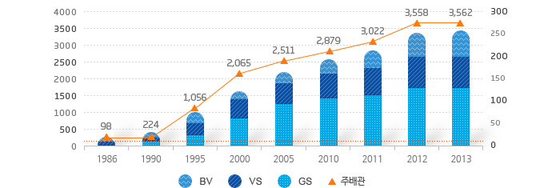
| 구분 | 1986 | 1990 | 1995 | 2000 | 2005 | 2010 | 2011 | 2012 | 2013 |
|---|---|---|---|---|---|---|---|---|---|
| 주배관 (단위 Km) | 98 | 224 | 1,056 | 2,065 | 2,511 | 2,879 | 3,022 | 3,558 | 3,562 |
| GS (단위 개소) | 4 | 12 | 28 | 65 | 87 | 102 | 106 | 115 | 116 |
| VS (단위 개소) | 4 | 6 | 25 | 43 | 50 | 57 | 61 | 87 | 87 |
| BV (단위 개소) | 0 | 8 | 23 | 14 | 24 | 33 | 40 | 54 | 55 |
공급관리소 조감도
- 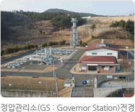
- 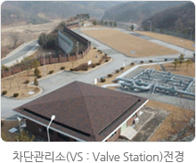
- 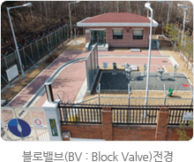
주요설비 전경사진
- 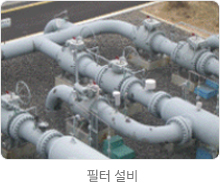
- 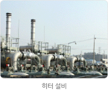
- 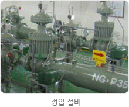
- 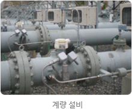
- 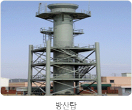
- 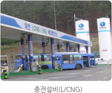